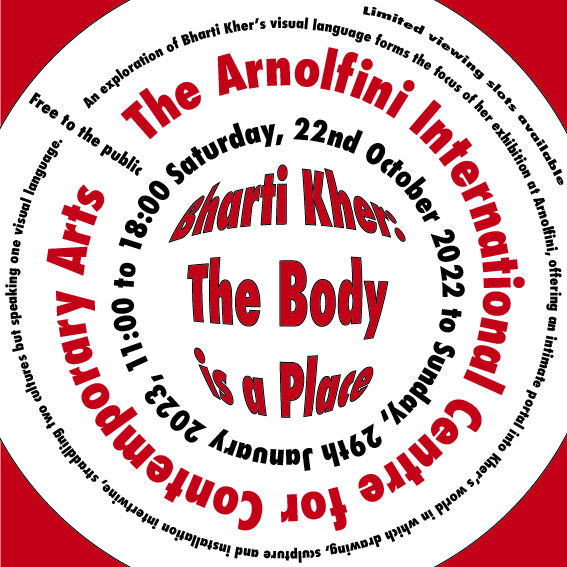
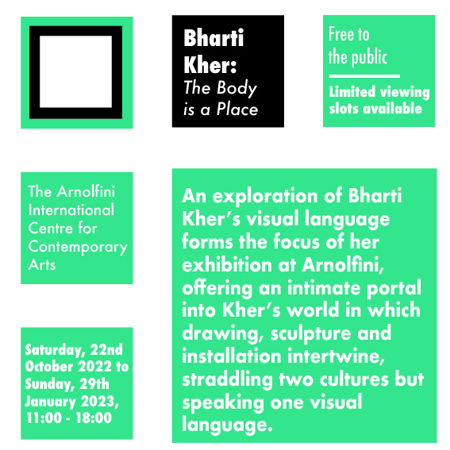
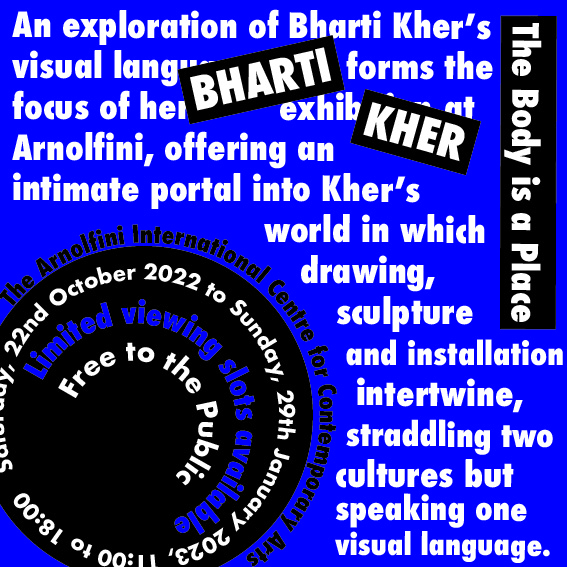
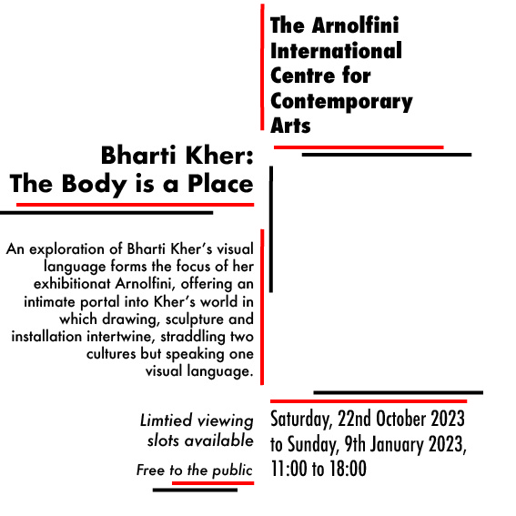
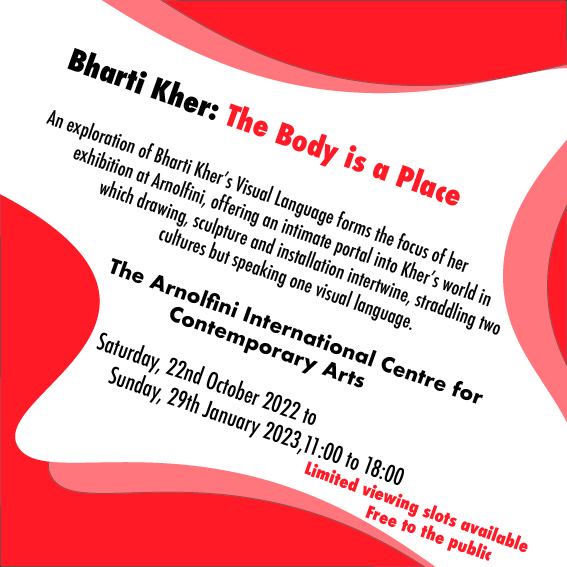

The gradient on the shapes add depth to the design making it more interesting for the audience.
Despite this I have a few criticisms for this typography. Firstly, it looks quite messy. This means it will be difficult
for people to read as they don’t know where to look. I should include more white space next time and give each bit of
text enough space. Another aspect that adds to this issue is the lack of variation regarding the font styles.
On future radial typographies, these are the areas in which I should focus on in order to improve, I will also challenge
myself and have the text come in a spiral pattern.
Dilatational

I learnt how to create different paths using the ellipse tool to make the circles of text. Originally,
the centre text followed the same pattern, but I found it looked boring and gave the overall print and flat look. To add some
contrast, I placed the Artist’s name and the name of the event inside the circle so it could take up its shape. I used different
colours and variations of the font Futura to highlight key information. The different colours also help to add some dimension
between the circles. In the future, I am going to include more white space to prevent the text looking too busy. There’s a
lot going on and that can be a lot on the eye as the audience won’t know where to focus.
Modular

I chose to use a grid of squares to create a clean, easy to read look. I found that a lot of the other
typographies felt busy to I wanted to create something simple with a smart look. When I was trying to find examples of modular
typographies, I found that this system is most suited for prints with less text. When I sketched out the plan, I chose to shape
the text in triangles, while I couldn’t figure out an effective way to carry this out, I think the squares are a simple but
classic and create a nice finish.
Random

For this typographic, I felt I had most freedom. I decided to use the text describing the exhibition as a
background, as for the other typographic systems I struggled finding a suitable place for it. While I like the look of this, I
recognise that it is too structured for a random typography. I think next time, I should experiment more before committing to a
layout.
Grid

This typography has a healthy balance of text and white space that creates a pleasing look to the audience.
The text is spread out and split into groups making it easy for people to read. These groups of texts are arranged vertically,
varying in font styles, so there is a clear flow for the audience to read. I added the red and black lines to prevent it from being
visually boring.
Transitional

After looking at different examples there is a key aspect of transitional typographies, all the text is displayed
with a hierarchy of relevant information. I decided to order mine as follows: Who, What, Where, When, Misc. For this typography I learnt
to use the curve tool to create and shape with curved edges, I then layered three of these, slightly adjusting the position. There are
two red shapes and one white. The white shape is used to present the text while the other two act as a border. One of the red shapes has
a lower opacity in order to adjust the colour.